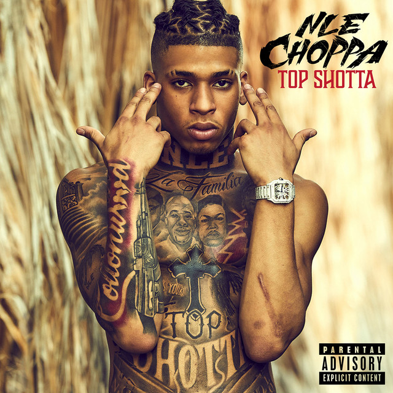
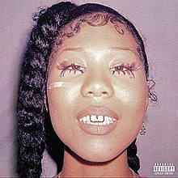

Spoofify
Welcome to Spoofify, the rip-off music sreaming service ICT Module 294
Top Albums of this week
Albums
NLE Choppa - Top Shotta

- 1. Walk Em Down (2:51)
- 2. Make Em Say (3:23)
- 3. Can't Take It (3:06)
- 4. Narrow Road (4:00)
- 5. Double Bacc (3:15)
- 6. Paranoid (3:00)
21 Savage and Drake - Her Loss

- 1. Pussy & Millions (4:03)
- 2. BackOutsideBoyz (2:33)
- 3. Spin Bout U (3:35)
- 4. Treacherous Twins (3:01)
- 5. More M’s (3:42)
- 6. Privileged Rappers 2:41
- Mustafa Sagaaro